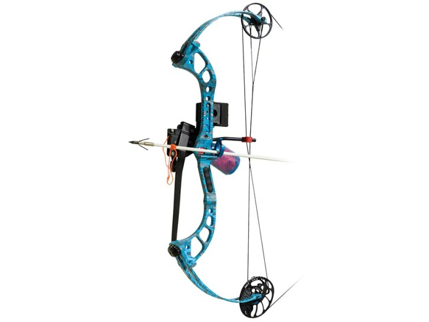
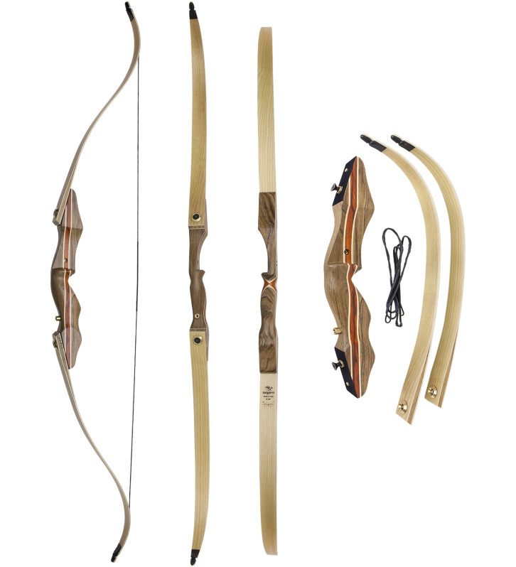
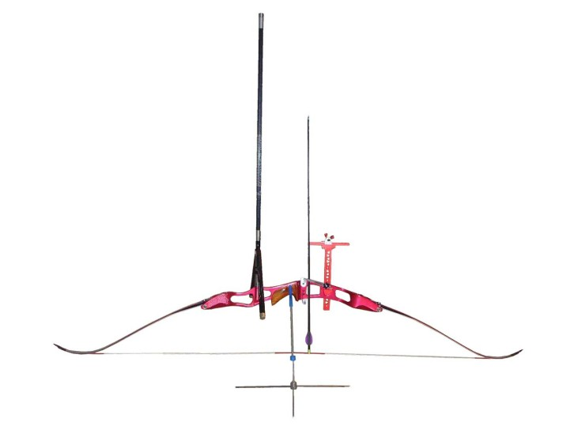

Which Bow is Right For You
Ask a dozen archery lovers their equipment preferences, and you’ll likely get different answers from everyone. Archery options are endless. Should you shoot an Olympic recurve, a compound bow or a traditional bow? You’ll also find tons of ways to shoot archery – whether it’s 3-D, field or traditional target, for starters. You’ll also find lots of archers who try sourcing local food by bowhunting.
And when you think about accessories, you’ll find even more choices. Do you want to release the bowstring with your fingers, or use a mechanical release? Do you want to keep it simple, choosing just a bow and arrows, or do you want some help aiming by trying a sight? Do you want to feel a strong connection to the bow and your shots, or focus more on precision and aiming?
It’s All Archery, and it’s All Good

The answers to these questions are all good news. As long as you follow the safety rules, you can’t choose a wrong type of archery, and you can switch your focus any time. Though you might hear good-natured teasing among archers about recurve bows being “struggle sticks” and compound bows having “training wheels,” all bows are fun, and any bow and arrow choice is still archery.
Many accomplished archers at even the highest competitive levels change disciplines. For example, Alex Wifler was an accomplished recurve archer and Olympic hopeful before a hand injury led him to switch to a compound bow. The result? He won a huge payout as the 2015 Vegas champion. Likewise, superstar Brady Ellison was a junior world champion with his compound before he switched to recurve…and scored two trips to the Olympic Games, AND an Olympic medal.
What Do You Want to Do?

Do you have specific goals in mind? If so, that might help you decide which archery game to play, and what kind of bow best handles that challenge. If you love shooting in the backyard with your family, you can shoot any bow you like…it’s all about what feels best and most fun to you!
If you saw competitive archery on television and you want to make an Olympic team, focus on the recurve bow and target archery. Do you love hunting from a tree stand, or shooting 3-D animal targets? Then a compound bow might be best. If hiking through the woods is your idea of a perfect day, give field archery a try – with either a recurve or a compound. Do you love the simplicity of you, a bow, arrows and no other distractions? Are you all about cosplay or Renaissance Faires? If so, a traditional bow might be an awesome setup.
There are even more options than the ones we’ve listed here…the opportunities to enjoy archery are virtually endless!
Stay Local, Try Different Bows

Practice makes perfect regardless of the bow you try, but different shooting techniques might appeal to you. You might want to spend time developing a smooth, clean finger release instead of a mechanical release. Or you might be drawn to a compound’s precision or the Zen of barebow. Are you a gearhead? Do you love trying out different equipment, and then making minor adjustments to test what works better? If so, a compound or competition recurve might be lots of fun.
Regardless of what appeals to you, your best starting point is your local archery store. Many stores rent equipment, which lets you try gear before buying. Try as many setups as possible to see which one you naturally want to use more.
Archery always starts with a bow and arrow. Everything beyond that is up to you. Think what you want to do, what you like, and what is accessible, and then try the kind of archery that makes your heart sing.
#Article from Archery 360 Magazine